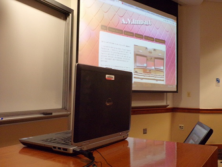

Personal Devices
In order to connect a personal device to a projector to display an image on a screen is very easy. If the connection is going to be wired, the table below shows what equipment is needed.
| Computer (PC or Mac) | VGA HDMI miniHDMI Mac adpater |
| Tablet | miniHDMI Mac adapter VGA |
So one end of the VGA or HDMI cable goes into the computer and the other end into the A.V. system. Since the projectors in the classrooms are set up in the ceiling, the cables cannot be connected directly to them. So, the touch panel is used to route the computers up to the projectors, and that way have the laptop image on the screen. Sometimes the connection is automatic. Some other times, I need to help the computer a little bit. I just press Ctrl F8 and select Duplicate.

Continue